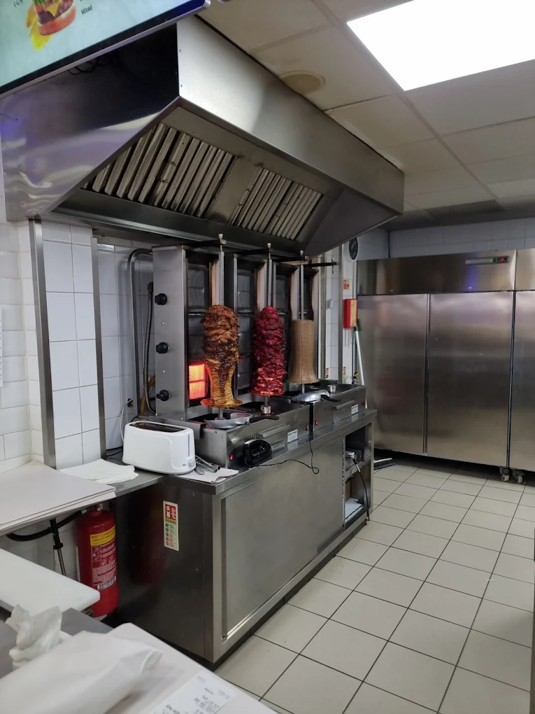
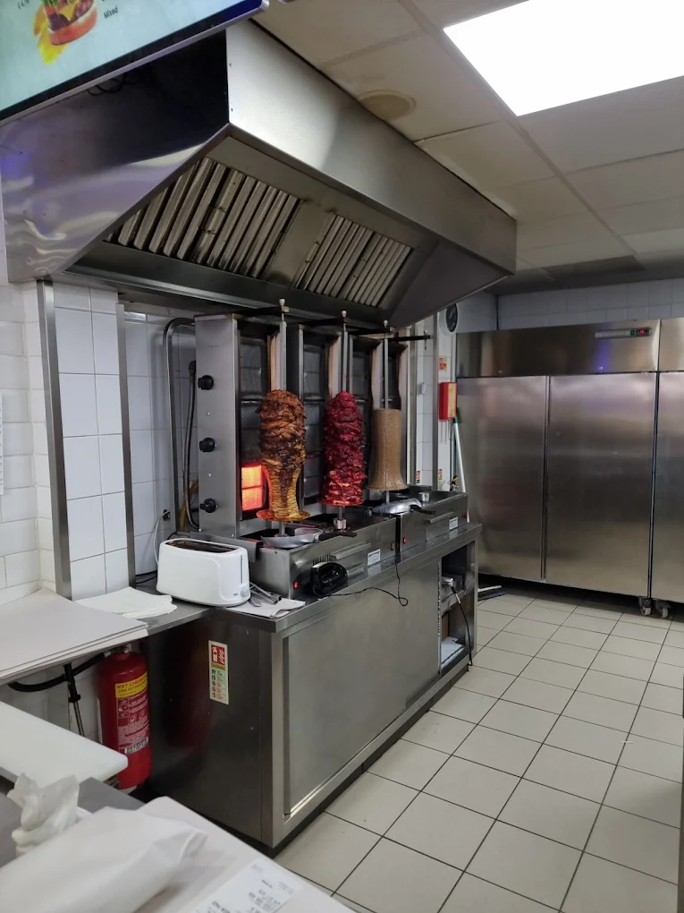
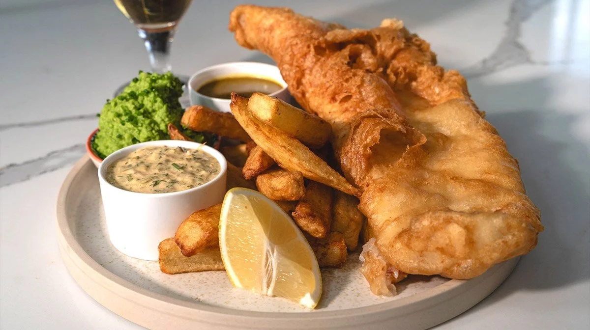
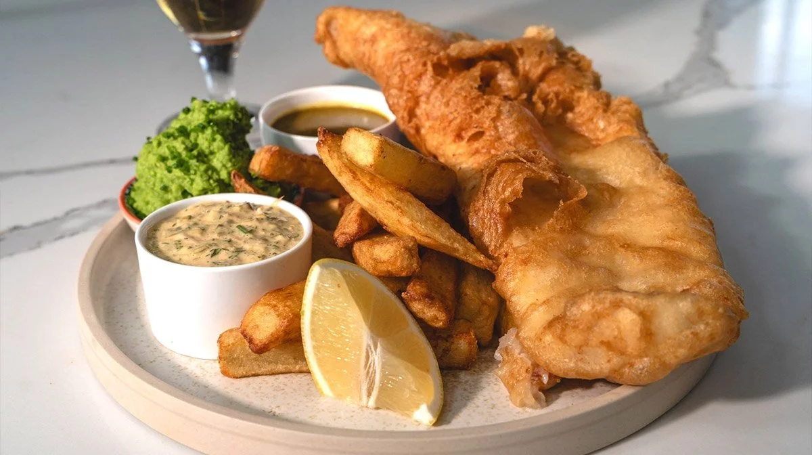

Our Story
At Bromley Fish & Chips, we take pride in serving the Kingswinford community with freshly prepared fish and chips made from premium ingredients. Our takeaway is built on a passion for quality, tradition, and friendly service. Every meal is cooked to order, ensuring the perfect balance of crispy batter, fluffy chips, and authentic flavour that keeps customers coming back. Every meal is cooked to order, ensuring the perfect balance of crispy batter, fluffy chips, and authentic flavour that keeps customers coming back.


 

 
